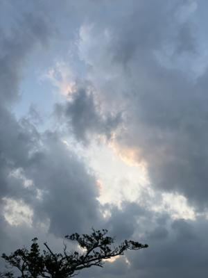
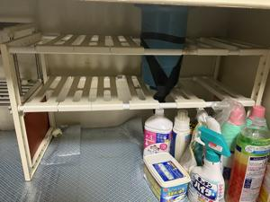
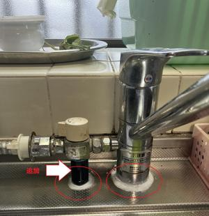
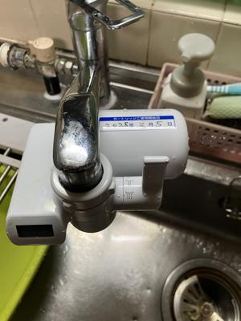

うるがいの話 ある日
最新: 浄水器を取り付けた【うるがいの話 ある日】とは 一日だけのプログです
『うるがいの話』の最新一日だけのプログで、通信料が少なく経済的だ。カニの画像をクリックすると全ての日付が載る『うるがいの話』サイトを表示します
|
|
【うるがいの話】 うるがい(ｳﾙｶﾞｲ urugai)とは、『もずくがに』の名前でとても大きくなります。 |
|---|---|
|
|
【カミマヤーの話】 猫のことを方言でマヤーといいます。カミマヤー（kamimayaa）とは、神の猫のことです。 |
|
【たながぁの音楽】 たながぁ（ﾀﾅｶﾞｰ tanagaa）とは手長えびのことで、何種類かあり大きいのは車 エビぐらいになります。 |

|
【ぶながぁの話】 ぶながぁ(ﾌﾞﾅｶﾞｰ bunagaa)とは、赤い髪の毛、赤い身体、そして身長は１ｍ２０ｃｍ ぐらい、川の蟹を食べているの目撃された。場所は沖縄県国頭郡大宜味村のと ある村僕の隣近所に住んでいる爺さんから、聞いた話です。 |
|
|
【ギーマの話】 ギーマ(giima)とは、山原の里山に咲くスズランに似た、 花を付けます。実は食べられます、 気が付くと口の周りが紫になっています。 |
2025年02月06日 (木）浄水器を取り付けた
17:55

夜の１９時過ぎ、リホームのオジサン（社長）から明日の９時に工
事しますと電話があった。お、イキナリか、朝の７時から、工事を
するため台所に収納していたものを、全部取り出す。

１．台所の蛇口の付け根のぐらつき修理
そして、９時オジサン達が来る。７０歳近くに見えるこの道のベテ
ランを残して、オジサンは別の現場へ移動する。さてと、その筋の
オジサンは、台所の蛇口の付け根のぐらつきを、ネジを閉めるべく
収納の奥にある蛇口の付け根根元が、いじれるよう蛇口をカバーし
ている６０センチほどのベニヤ版を取外す。そして、いよいよ根元
を・・・・、『ダメだ！、材木が腐っている』、ん、蛇口の根元を
固定しているためのネジを挟むための材木が、腐っているらしい（
私も、収納に寝ころび確認した）。キッチンを入れ替えるか・・、
それとも蛇口の周りを切り取り補修するか・・と話し合う。
根本的な対応にはかなりの費用がかかることから、ネジは諦め蛇口
を上部の周りを固定することに。グラグラを冗長する洗浄機へのホ
ースを、安定させるため支えのパイプを、新たに設ける。そしてこ
のパイプと蛇口の根元に塩化ビニールで安定させる（硬さはないが
、蛇口の根元の水漏れ防止になる）。根本対応ではないが意外と安
定している。３１年も住んでいるので、ガタが来ている。

２．トイレタンクのオーバフロー管の入れ替え
数年前から、チョロチョロと水漏れの音、オーバフロー管が古く壊
れている。オーバフロー管を少し傾けることで水漏れを防ぐことが
できるので、逃げてきたが子供が、トイレを使ったあと頻繁に水漏
れがした。さすがに、限界である。新品と入れ替えてもらった。古
い器具を取り外すのだが、通常の手番ではなかなか外れず電動カッ
ターを使い、取り外す。ネットでは、素人でも出来るとあったが、
とてもじゃないが無理である。根本対応にホッとする。

３．内科への通院
尿検査や血液検査などを行う。尿酸値は、薬の効果で５に落ちる。
家での測定している血圧が、どんどん高くなっているのを報告。塩
分とっていますかと言われたので、ポテチを夜、食べてますと白状
する。ポチチはダメです！！と言われた。甘いものはいいですがと
ポテチもダメか・・・・
４．浄水器の取り付け
ヨメが、前から欲しいと言っていた浄水器を電気店から買って取り
付けた。疲れていたが、一気にやるべと説明書を見ながら設置する
。ケッ！、難しいぜ！！、ま、何とかできたが。あとで、ネットを
みると取り付けもお願いしたり、しているようだ。
ちなみに、浄水器の値段は、１５，７３０円、アマゾンを検索する
と
【2024年発売】パナソニック 蛇口直結型浄水器
PFOS/PFOA除去対応 液晶表示タイプ TK-CJ24-W ホワイト
￥９，６２７ 税込
フムフム、ま、そんなもんだろう。お、ＰＦＯＳ／ＰＦＯＡも除去
出来るのか。２０年前に高価な、浄水器（還元水）を購入、１０年
前に撤去したが、その時に設置したキャップが取り外せなかったが
オジサンに、ついでにお願いして外してもらい（オジサンも道具を
使って外していた、私には無理）、滞りなく新品の浄水器が取り付
けられた。

さてと工事費はいかほどなのだろうか、請求書はまだである。